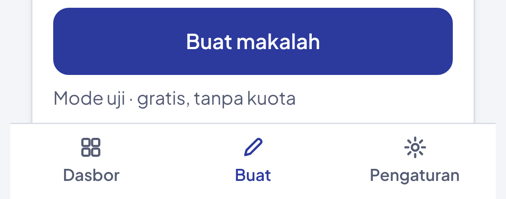
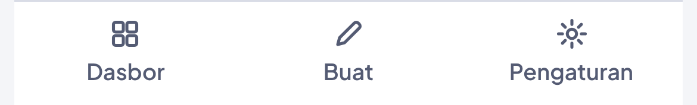

<!doctype html>
<html lang="id">
<head>
<meta charset="utf-8">
<meta name="viewport" content="width=1080">
<title>MALAS Promo v2</title>
<!--
  Video promo vertikal MALAS v2 (1080x1920, 30 fps, tanpa audio, 19 dtk, loop).
  Deterministik: window.renderFrame(tMs) menghitung seluruh tampilan dari t.
  ?play=1 -> pratinjau realtime; ?t=8.5 -> satu bingkai.
  Aset di ./assets adalah tangkapan layar ASLI aplikasi MALAS (Mode uji) dan halaman .docx asli
  hasil pipeline MALAS (MALAS_MOCK=1) yang dirender LibreOffice. Font self-host di ./fonts.
-->
<style>
@font-face{font-family:"Bricolage";src:url(fonts/bricolage-grotesque-latin-wght-normal.woff2) format("woff2");font-weight:200 800;font-display:block}
@font-face{font-family:"Jakarta";src:url(fonts/plus-jakarta-sans-latin-600-normal.woff2) format("woff2");font-weight:600;font-display:block}
@font-face{font-family:"Jakarta";src:url(fonts/plus-jakarta-sans-latin-700-normal.woff2) format("woff2");font-weight:700;font-display:block}
@font-face{font-family:"Jakarta";src:url(fonts/plus-jakarta-sans-latin-800-normal.woff2) format("woff2");font-weight:800;font-display:block}
@font-face{font-family:"JBMono";src:url(fonts/jetbrains-mono-latin-700-normal.woff2) format("woff2");font-weight:700;font-display:block}
@font-face{font-family:"Carlito";src:url(fonts/Carlito-Regular.ttf) format("truetype");font-weight:400;font-display:block}
@font-face{font-family:"Carlito";src:url(fonts/Carlito-Bold.ttf) format("truetype");font-weight:700;font-display:block}
:root{
  --bg:#f4f5f8; --surface:#fff; --surface-2:#eceef4; --ink:#161a2c; --muted:#545b73; --line:#d9dce6; --line-strong:#b9bed0;
  --accent:#2c3a9e; --accent-soft:#e5e8fa; --mark:#ffe55c; --mark-ink:#1d1a05; --margin-red:#e0607a;
}
html,body{margin:0;background:#000}
#stage{position:relative;width:1080px;height:1920px;overflow:hidden;background:var(--bg);font-family:"Jakarta",sans-serif;color:var(--ink);-webkit-font-smoothing:antialiased}
.tr{position:absolute;will-change:transform,opacity}
/* dua ukuran teks per adegan: judul (104 / 128 di hook) dan kecil (44) */
.hd{left:84px;width:860px;margin:0;font:800 104px/1.0 "Bricolage";letter-spacing:-.035em}
.hd .a{color:var(--accent)}
.on-blue{color:#fff}
.sm{font:700 44px/1.2 "Jakarta"}
.pill{display:inline-flex;align-items:center;gap:12px;padding:10px 24px 12px;border-radius:999px;font:700 44px/1.1 "Jakarta";white-space:nowrap}
.pill.ex{background:var(--ink);color:#fff}
.mk{background:var(--mark);color:var(--mark-ink);padding:0 .08em;border-radius:.08em}

/* ---- jendela pengolah kata (generik, tanpa merek) ---- */
.wp{position:absolute;background:#f3f4f6;border-radius:22px;overflow:hidden;border:2px solid #c9ccd4;
  box-shadow:0 30px 60px -20px rgba(22,26,44,.35),0 8px 18px rgba(22,26,44,.10);font-family:"Carlito";color:#2b2f38}
.wp .tb{height:54px;display:flex;align-items:center;justify-content:center;position:relative;background:#fbfbfc;border-bottom:1px solid #e1e3e8;font-size:27px}
.wp .tb .dots{position:absolute;left:20px;top:18px;display:flex;gap:10px}
.wp .tb .dots i{width:16px;height:16px;border-radius:50%;background:#c9ccd4;display:block}
.wp .tabs{height:46px;display:flex;align-items:flex-end;gap:30px;padding:0 26px;background:#fbfbfc;font-size:25px;color:#4a4f5c}
.wp .tabs span{padding-bottom:9px;border-bottom:4px solid transparent}
.wp .tabs span.on{color:var(--accent);border-color:var(--accent);font-weight:700}
.wp .tools{height:86px;display:flex;align-items:center;gap:14px;padding:0 20px;background:#fbfbfc;border-bottom:1px solid #dcdfe5;font-size:23px}
.wp .box{height:42px;border:1.5px solid #c4c8d0;border-radius:7px;background:#fff;display:flex;align-items:center;padding:0 10px;white-space:nowrap}
.wp .btnI{width:40px;height:42px;display:flex;align-items:center;justify-content:center;font-weight:700;font-size:26px;border-radius:7px}
.wp .sep{width:1.5px;height:50px;background:#dcdfe5}
.wp .sty{height:62px;padding:0 14px;border:1.5px solid #dcdfe5;border-radius:8px;background:#fff;display:flex;flex-direction:column;justify-content:center;line-height:1.05}
.wp .sty b{font-size:22px}.wp .sty small{font-size:17px;color:#7a7f8c}
.wp .ruler{height:28px;background:#eef0f3;border-bottom:1px solid #dcdfe5;position:relative;overflow:hidden}
.wp .area{position:absolute;left:0;right:0;background:#dfe2e7;overflow:hidden}
.wp .stack{position:absolute;left:0;top:0;transform-origin:0 0}
.wp .pg{position:absolute;background:#fff;box-shadow:0 2px 3px rgba(0,0,0,.12),0 10px 26px rgba(0,0,0,.10)}
.wp .pg img{display:block;width:100%;height:100%}
.wp .sb{position:absolute;left:0;right:0;bottom:0;height:44px;background:#f0f1f4;border-top:1px solid #dcdfe5;display:flex;align-items:center;gap:18px;padding:0 20px;font-size:23px;color:#4a4f5c}

/* ---- peramban generik (tanpa merek) ---- */
.br{position:absolute;background:#fff;border-radius:22px;overflow:hidden;border:2px solid #c9ccd4;box-shadow:0 20px 40px -18px rgba(22,26,44,.3)}
.br .strip{height:66px;background:#e6e8ee;position:relative}
.br .t{position:absolute;bottom:0;height:52px;border-radius:12px 12px 0 0;display:flex;align-items:center;gap:10px;padding:0 0 0 14px;box-sizing:border-box;font:600 24px "Jakarta";color:#3a3f4d;white-space:nowrap;overflow:hidden}
.br .t.on{background:#fff}
.br .t i{flex:none;width:22px;height:26px;border-radius:4px;display:block}
.br .t.off::after{content:"";position:absolute;right:0;top:14px;bottom:14px;width:2px;background:#c4c8d2}
.br .addr{height:62px;display:flex;align-items:center;padding:0 18px}
.br .addr div{flex:1;height:42px;border-radius:21px;background:#eef0f4}

/* ---- ponsel ---- */
.phone{position:absolute;background:#11131c;border-radius:96px;padding:14px;box-sizing:border-box;
  box-shadow:0 40px 80px -30px rgba(22,26,44,.55),inset 0 0 0 3px #2a2e3b}
.phone .scr{position:relative;width:100%;height:100%;border-radius:82px;overflow:hidden;background:var(--bg)}
.phone .island{position:absolute;left:50%;top:18px;width:150px;height:44px;margin-left:-75px;border-radius:22px;background:#000;z-index:9}
.phone .sbar{position:absolute;left:0;right:0;top:0;background:#fff;z-index:8}
.phone .layer{position:absolute;left:0;top:0;width:100%;height:100%;overflow:hidden}
.phone .page{position:absolute;left:0;top:0;width:100%;transform-origin:0 0}
.phone .page img{display:block;width:100%}
.tap{position:absolute;width:84px;height:84px;margin:-42px 0 0 -42px;border-radius:50%;background:rgba(22,26,44,.28);border:4px solid #fff;box-sizing:border-box;z-index:20}

/* ---- maskot (turunan Mascot.tsx) ---- */
.masc{position:absolute;overflow:visible}
.masc .o{stroke:var(--ink);stroke-width:3;stroke-linecap:round;stroke-linejoin:round}
.masc .sheet{fill:#fff}.masc .nf{fill:none}
.masc .margin{stroke:var(--margin-red);stroke-width:3;stroke-linecap:round}
.masc .cheek{fill:var(--margin-red);opacity:.45}.masc .hl{fill:var(--mark)}
.masc .z{fill:none;stroke:#fff;stroke-width:3;stroke-linecap:round;stroke-linejoin:round}
</style>
</head>
<body>
<div id="stage"></div>
<script>
(function(){
"use strict";
const T=19.0, FPS=30;
const stage=document.getElementById('stage');
const clamp=(x,a=0,b=1)=>Math.min(b,Math.max(a,x));
const P=(t,a,d)=>clamp((t-a)/d);
const lerp=(a,b,x)=>a+(b-a)*x;
const outCubic=x=>1-Math.pow(1-x,3);
const inCubic=x=>x*x*x;
const inOut=x=>x<.5?4*x*x*x:1-Math.pow(-2*x+2,3)/2;
const outBack=(x,s=1.7)=>{const c=s+1;return 1+c*Math.pow(x-1,3)+s*Math.pow(x-1,2);};
const blink=t=>Math.floor(t*2.2)%2===0;
const $=(s,r=stage)=>r.querySelector(s);
const $$=(s,r=stage)=>Array.from(r.querySelectorAll(s));
const f2=n=>n.toFixed(2);
function el(html){const d=document.createElement('div');d.innerHTML=html.trim();const e=d.firstElementChild;stage.appendChild(e);return e;}

/* ===== track: elemen dengan masuk/keluar seragam (geser + skala halus) ===== */
const tracks=[];
// loop: track hook punya tin=0; ketika t>T-0.4 dievaluasi dengan t-T sehingga masuk tepat di bingkai 0
function track(e,tin,tout,o={}){tracks.push({e,tin,tout,dy:o.dy??70,hook:!!o.hook,z:o.z||1});e.style.zIndex=o.z||1;return e;}
const ENTER=0.42, EXIT=0.28;

/* ===== aset ===== */
const S=572/390;              // skala layar ponsel (pt -> px)
const SB=40;                  // tinggi bilah status ponsel (pt)

/* ---------- HOOK: peramban 14 tab + dokumen kosong ---------- */
const TABS=['#c0504d','#3f7cc4','#5f9e57','#c98a2b','#8a5bb5','#3f7cc4','#c0504d','#2f8f8f','#c98a2b','#5f9e57','#3f7cc4','#8a5bb5','#c0504d'];
const hookBr=track(el(`<div class="br tr" style="left:44px;top:610px;width:900px;height:360px">
  <div class="strip">
    <div class="t on" style="left:10px;width:350px"><i style="background:#c0504d"></i>Literasi Digital Mahasiswa.pdf</div>
    ${TABS.map((c,i)=>`<div class="t off" style="left:${364+i*40}px;width:40px;padding-left:9px"><i style="background:${c}"></i></div>`).join('')}
  </div>
  <div class="addr"><div></div></div></div>`),0,2.4,{hook:true});

function wpMarkup(id,{left,top,width,height,title,status}){
  const area=height-54-46-86-28-44;
  let ticks='';for(let i=0;i<=40;i++){const x=i*24;ticks+=`<i style="position:absolute;left:${x}px;bottom:0;width:1.5px;height:${i%4?7:13}px;background:#9aa0ad"></i>`;}
  return `<div class="wp tr" id="${id}" style="left:${left}px;top:${top}px;width:${width}px;height:${height}px">
   <div class="tb"><span class="dots"><i></i><i></i><i></i></span>${title}</div>
   <div class="tabs"><span>Berkas</span><span class="on">Beranda</span><span>Sisipkan</span><span>Tata Letak</span><span>Referensi</span><span>Tinjau</span></div>
   <div class="tools"><span class="box" style="width:180px">Times New Roman</span><span class="box" style="width:30px">12</span><span class="sep"></span>
     <span class="btnI">B</span><span class="btnI" style="font-style:italic;font-weight:400">I</span><span class="btnI" style="text-decoration:underline;font-weight:400">U</span><span class="sep"></span>
     <span class="sty"><b>Normal</b><small>Aa</small></span><span class="sty"><b>Judul 1</b><small>Aa</small></span></div>
   <div class="ruler"><div style="position:absolute;left:${(width-600)/2}px;width:600px;top:0;bottom:0;background:#fff">${ticks}</div></div>
   <div class="area" style="top:${54+46+86+28}px;height:${area}px"><div class="stack"></div></div>
   <div class="sb"><span class="st">${status}</span><span style="margin-left:auto">Bahasa Indonesia</span><span>100%</span></div>
  </div>`;
}
const wpH=track(el(wpMarkup('wph',{left:110,top:740,width:850,height:790,title:'Makalah.docx',status:'Halaman 1 dari 1 · 0 kata'})),0,2.4,{hook:true,z:2});
// halaman kosong + kursor
(function(){const st=$('.stack',wpH);st.innerHTML=`<div class="pg" style="left:125px;top:28px;width:600px;height:848px">
  <div class="caret" style="position:absolute;left:72px;top:92px;width:4px;height:40px;background:#111"></div></div>`;})();
const hookH=track(el(`<h1 class="hd tr" style="top:270px;font-size:128px">14 tab jurnal.<br><span class="a" id="nol" style="display:inline-block;transform-origin:0 70%">0 kata.</span></h1>`),0,2.4,{hook:true,z:3});

/* ---------- PONSEL: formulir -> job (tangkapan layar asli) ---------- */
const phone=track(el(`<div class="phone tr" style="left:240px;top:650px;width:600px;height:1266px"><div class="scr">
  <div class="island"></div><div class="sbar" style="height:${SB*S}px"></div>
  <div class="layer" id="Lform"><div class="page" id="Pform" style="top:${SB*S}px">
     
     <div id="m1" style="position:absolute;background:#fff;left:${50*S}px;top:${428*S}px;height:${24*S}px;width:${260*S}px"></div>
     <div id="m2" style="position:absolute;background:#fff;left:${50*S}px;top:${452*S}px;height:${24*S}px;width:${190*S}px"></div>
     <div id="cr" style="position:absolute;width:${2*S}px;height:${20*S}px;background:var(--accent)"></div>
     <div id="ring" style="position:absolute;left:${38*S}px;top:${2617*S}px;width:${314*S}px;height:${142*S}px;border:6px solid var(--accent);border-radius:${16*S}px;box-sizing:border-box;opacity:0"></div>
  </div></div>
  <div class="layer" id="Ljob">
     <div class="page" id="Pb" style="top:${SB*S}px"></div>
     <div class="page" id="Pc" style="top:${SB*S}px"></div>
     
  </div>
  
  <div class="tap" id="tap1"></div>
</div></div>`),2.4,8.3,{dy:260,z:2});

const hA=track(el(`<h1 class="hd tr" style="top:290px">Ketik <span class="a">judulnya.</span></h1>`),2.4,4.15);
const hB=track(el(`<h1 class="hd tr" style="top:290px">Pakai <span class="a">key-mu</span>, atau Mode uji.</h1>`),4.1,5.6);
const hC=track(el(`<h1 class="hd tr" style="top:290px"><span class="a">MALAS</span> yang nyusun.</h1>`),5.6,8.3);
const rowC=track(el(`<div class="tr" style="left:84px;top:520px;display:flex;align-items:center;gap:22px">
   <span class="sm" style="display:flex;align-items:center;gap:12px;color:var(--muted)"><svg width="46" height="46" viewBox="0 0 24 24" fill="none" stroke="currentColor" stroke-width="2.4" stroke-linecap="round"><circle cx="12" cy="12" r="9.5"/><path d="M12 7v5l3.5 2.5"/></svg>±10–30 menit</span>
   <span class="pill ex">Tampilan contoh</span></div>`),5.75,8.3);

/* ---------- PENGOLAH KATA: halaman .docx asli ---------- */
const PW=600, PH=Math.round(600*1754/1241), GAP=28;
const pgTop=n=>GAP+(n-1)*(PH+GAP);
const wpD=track(el(wpMarkup('wpd',{left:60,top:610,width:900,height:930,title:'contoh-mode-uji.docx',status:'Halaman 1 dari 9 · 767 kata'})),8.2,11.4,{dy:200,z:2});
(function(){
  const st=$('.stack',wpD); let s='';
  for(let n=1;n<=4;n++) s+=`<div class="pg" style="left:150px;top:${pgTop(n)}px;width:${PW}px;height:${PH}px"></div>`;
  // stabilo di atas sitasi asli "(Penulis B, 2024)" pada halaman 4 (bbox dari pdftotext -bbox, 150 dpi)
  const k=PW/1241, x0=150+376*k, y0=pgTop(4)+486*k, w=(560-376)*k, h=(518-486)*k;
  s+=`<div id="hl" style="position:absolute;left:${f2(x0-3)}px;top:${f2(y0)}px;width:${f2(w+6)}px;height:${f2(h)}px;background:var(--mark);mix-blend-mode:multiply;transform-origin:0 50%;border-radius:2px"></div>`;
  st.innerHTML=s;
})();
const hD=track(el(`<h1 class="hd tr" style="top:290px">Jadi .docx, siap <span class="a">kamu edit.</span></h1>`),8.2,11.4);
const rowD=track(el(`<div class="tr" style="left:84px;top:520px"><span class="pill ex">Tampilan contoh</span></div>`),8.35,11.4);

/* ---------- DRAF + aturan kampus (biru) ---------- */
const hE=track(el(`<h1 class="hd tr on-blue" style="top:640px;font-size:128px;text-align:center;line-height:1.05">Hasilnya<br><span class="mk">DRAF.</span></h1>`),11.4,13.8);
const sE=track(el(`<div class="sm tr on-blue" style="left:84px;width:860px;top:960px;text-align:center">Cek sendiri.<br>Ikuti aturan AI kampusmu.</div>`),11.55,13.8);

/* ---------- tagline + CTA (biru) dengan maskot ---------- */
const hF=track(el(`<h1 class="hd tr on-blue" style="top:300px;font-size:120px">Kamu mager,<br><span class="mk">MALAS</span> yang gerak.</h1>`),13.8,16.2);
const hG=track(el(`<h1 class="hd tr on-blue" style="top:300px">Tutup 14 tab jurnalnya.</h1>`),16.2,18.6);
const cta=track(el(`<div class="tr" style="left:84px;width:860px;top:600px;display:flex;flex-direction:column;align-items:center;gap:40px">
   <div id="btn" style="background:#fff;color:var(--accent);font:800 64px/1 Bricolage;letter-spacing:-.02em;padding:42px 90px;border-radius:999px;box-shadow:0 14px 0 -2px rgba(0,0,0,.22);display:flex;align-items:center;gap:20px">Coba gratis
     <svg width="56" height="56" viewBox="0 0 24 24" fill="none" stroke="currentColor" stroke-width="3" stroke-linecap="round" stroke-linejoin="round"><path d="M4 12h15M13 6l6 6-6 6"/></svg></div>
   <div style="font:700 56px/1 JBMono;color:#fff;letter-spacing:-.02em">malas-app.netlify.app</div></div>`),16.35,18.6);
const masc=track(el(`<svg class="masc tr" viewBox="-14 -34 156 156" style="left:310px;top:830px;width:460px">
  <g class="pose" transform="rotate(90 60 58) translate(0 -8)"><g class="breathe">
    <path class="sheet o" d="M34 14h46l16 16v62a10 10 0 0 1-10 10H34a10 10 0 0 1-10-10V24a10 10 0 0 1 10-10z"/>
    <path class="o nf" d="M80 14v10a6 6 0 0 0 6 6h10"/><path class="margin" d="M38 18v80"/>
    <g transform="rotate(-90 66 56)"><path class="o nf" d="M52 50q5 6 10 0M70 50q5 6 10 0"/><path class="o nf" d="M60 62q6 5 12 0"/>
    <ellipse class="cheek" cx="52" cy="62" rx="4" ry="2"/><ellipse class="cheek" cx="80" cy="62" rx="4" ry="2"/></g>
    <rect class="hl" x="46" y="76" width="40" height="8" rx="2"/><path class="o nf" d="M48 92h22"/></g></g>
  <g class="zz"><path class="z" d="M102 24h12l-12 12h12"/><path class="z" d="M116 4h8l-8 8h8"/></g></svg>`),13.8,18.6,{dy:120});
const bar=track(el(`<div class="tr" style="left:290px;top:1290px;width:500px;height:22px;border-radius:11px;background:rgba(255,255,255,.25);overflow:hidden">
   <div id="barf" style="position:absolute;inset:0;background:#fff;border-radius:11px;transform-origin:0 50%"></div></div>`),14.0,16.2);

/* ===== animasi isi per waktu global ===== */
function inner(t){
  // HOOK (tt = waktu hook, bisa negatif saat loop masuk)
  const tt=t>T-0.4?t-T:t;
  const nol=$('#nol'); const hs=P(tt,0.28,0.4);
  const sl=tt>=0.28?lerp(1.32,1,outBack(hs,2.2)):1;
  nol.style.transform=`scale(${sl.toFixed(4)})`;
  const sh=tt>0.32&&tt<1.0?Math.sin((tt-0.32)*62)*12*Math.exp(-(tt-0.32)*8):0;
  $('.stack',wpH).style.transform=`translateX(${f2(sh)}px)`;
  $('.caret',wpH).style.opacity=blink(Math.max(0,tt))?1:0;
  const st=$('.st',wpH); st.style.color=hs>0&&hs<1?'var(--accent)':''; st.style.fontWeight=hs>0&&hs<1?'700':'';

  // PONSEL: formulir
  const rev=P(t,2.85,1.0)*450;           // pt teks yang terungkap (baris 1 = 248pt, baris 2 = 170pt)
  const r1=Math.min(rev,248), r2=clamp(rev-248,0,170);
  $('#m1').style.left=f2((54+r1)*S)+'px'; $('#m1').style.width=f2(Math.max(0,250-r1)*S)+'px';
  $('#m2').style.left=f2((54+r2)*S)+'px'; $('#m2').style.width=f2(Math.max(0,175-r2)*S)+'px';
  const cr=$('#cr'); const onL2=rev>248;
  cr.style.left=f2((54+(onL2?r2:r1)+1)*S)+'px'; cr.style.top=f2((onL2?454:430)*S)+'px';
  cr.style.opacity=(t<4.0&&(rev<418?true:blink(t)))?1:0;
  const scroll=lerp(300,2290,inOut(P(t,4.15,0.6)));
  $('#Pform').style.transform=`translateY(${f2(-(scroll-0)*S)}px)`;
  const rg=P(t,4.85,0.6); $('#ring').style.opacity=rg>0&&rg<1?Math.sin(Math.PI*rg).toFixed(3):0;
  $('#ring').style.transform=`scale(${(1+0.03*Math.sin(Math.PI*rg)).toFixed(4)})`;
  // formulir -> job: dorong ke kiri
  const push=outCubic(P(t,5.6,0.4));
  $('#Lform').style.transform=`translateX(${f2(-push*572*0.35)}px)`; $('#Lform').style.opacity=(1-push).toFixed(3);
  $('#Ljob').style.transform=`translateX(${f2((1-push)*572)}px)`; $('#Ljob').style.display=t>=5.6?'block':'none';
  $('#Lform').style.display=push<1?'block':'none';
  const xc=P(t,6.6,0.3);
  $('#Pc').style.opacity=xc.toFixed(3);
  const js=lerp(0,1160,inOut(P(t,7.0,0.6)));
  $('#Pc').style.transform=`translateY(${f2(-js*S)}px)`;
  // ketukan: tombol Unduh .docx (bbox asli 41,1543,308x52 pt)
  const tap=$('#tap1'); const tp=P(t,7.75,0.4);
  tap.style.opacity=tp>0&&tp<1?(1-tp*0.6).toFixed(3):0;
  tap.style.left=f2(195*S)+'px'; tap.style.top=f2((SB+1569-1160)*S)+'px';
  tap.style.transform=`scale(${(tp<0.35?lerp(1.3,0.85,tp/0.35):lerp(0.85,1,(tp-0.35)/0.65)).toFixed(3)})`;

  // zoom kamera ke ponsel: kolom judul saat mengetik, lalu tombol Unduh .docx
  const zA=inOut(P(t,2.75,0.35))*(1-inOut(P(t,3.95,0.3)));
  const zB=inOut(P(t,7.5,0.35));
  const zf=1+0.22*zA+0.2*zB;
  phone.style.transformOrigin='300px 0px';   // membesar ke bawah, tidak menimpa teks di atas ponsel
  if(t>=2.4&&t<8.3) phone.style.transform+=` scale(${zf.toFixed(4)})`;

  // PENGOLAH KATA
  const lt=t-8.2;
  const sc=inOut(P(lt,0.75,0.85));
  const z=inOut(P(lt,1.75,0.7));
  const ty0=-lerp(0,pgTop(4)-24,sc);
  const Z=lerp(1,1.9,z), cx=150+376*PW/1241+45, cy=pgTop(4)+500*PW/1241;
  const tx=lerp(0,450-1.9*cx,z), ty=lerp(ty0,300-1.9*cy,z);
  $('.stack',wpD).style.transform=`translate(${f2(tx)}px,${f2(ty)}px) scale(${Z.toFixed(4)})`;
  $('#hl').style.transform=`scaleX(${outCubic(P(lt,2.45,0.4)).toFixed(4)})`;
  const view=-ty0+300; const pg=Math.max(1,Math.min(4,Math.floor(view/(PH+GAP))+1));
  $('.st',wpD).textContent=`Halaman ${pg} dari 9 · 767 kata`;

  // MASKOT: napas, zz, pindah ke bawah saat CTA
  const m=t-13.8, br=1+0.025*Math.sin(m*Math.PI*2/1.8);
  $('.breathe',masc).setAttribute('transform',`translate(60 102) scale(1 ${br.toFixed(4)}) translate(-60 -102)`);
  $$('.z',masc).forEach((zz,i)=>{const ph=((m*0.7+i*0.5)%1+1)%1;zz.setAttribute('transform',`translate(${f2(ph*6-4)} ${f2(-ph*14+14)})`);zz.style.opacity=Math.sin(Math.PI*ph).toFixed(3);});
  const mv=inOut(P(t,16.2,0.5));
  masc.style.left=f2(lerp(310,380,mv))+'px'; masc.style.top=f2(lerp(830,1050,mv))+'px'; masc.style.width=f2(lerp(460,320,mv))+'px';
  $('#barf').style.transform=`scaleX(${outCubic(P(t,14.3,1.6)).toFixed(4)})`;
  const bp=t>17.3?1-0.06*Math.sin(Math.PI*P(t,17.3,0.22)):1;
  $('#btn').style.transform=`scale(${bp.toFixed(4)})`;
}

/* ===== latar: terang <-> biru ===== */
function bgAt(t){
  const b=Math.min(P(t,11.2,0.3), 1-P(t,18.6,0.3));
  const L=[244,245,248], B=[44,58,158];
  return `rgb(${L.map((v,i)=>Math.round(lerp(v,B[i],inOut(b)))).join(',')})`;
}

window.DURATION_MS=T*1000; window.FPS=FPS;
window.renderFrame=function(tMs){
  let t=tMs/1000; t=((t%T)+T)%T;
  stage.style.background=bgAt(t);
  for(const k of tracks){
    const tt=(k.hook&&t>T-0.4)?t-T:t;
    const tin=k.hook?(k.tin===0?0:k.tin):k.tin;
    const enterStart=k.hook&&k.tin===0?-ENTER:tin;
    const vis=tt>=enterStart&&tt<k.tout;
    k.e.style.visibility=vis?'visible':'hidden';
    if(!vis) continue;
    const ei=outCubic(P(tt,enterStart,ENTER));
    const ex=inCubic(P(tt,k.tout-EXIT,EXIT));
    const y=(1-ei)*k.dy - ex*50;
    const s=lerp(0.97,1,ei)*lerp(1,0.98,ex);
    k.e.style.transform=`translate(0,${f2(y)}px) scale(${s.toFixed(4)})`;
    k.e.style.opacity=(ei*(1-ex)).toFixed(3);
  }
  inner(t);
};

const FONTS=['800 100px Bricolage','600 30px Jakarta','700 30px Jakarta','800 30px Jakarta','700 30px JBMono','400 30px Carlito','700 30px Carlito'];
window.__ready=(async()=>{
  await Promise.all(FONTS.map(f=>document.fonts.load(f,'Aa0.')));
  await document.fonts.ready;
  await Promise.all(Array.from(document.images).map(im=>im.decode().catch(()=>{throw new Error('gagal memuat '+im.src)})));
  const ok=FONTS.every(f=>document.fonts.check(f,'Aa'));
  const q=new URLSearchParams(location.search);
  window.renderFrame((parseFloat(q.get('t'))||0)*1000);
  if(q.get('play')){const t0=performance.now();const loop=n=>{window.renderFrame(n-t0);requestAnimationFrame(loop);};requestAnimationFrame(loop);}
  return ok;
})();
})();
</script>
</body>
</html>
